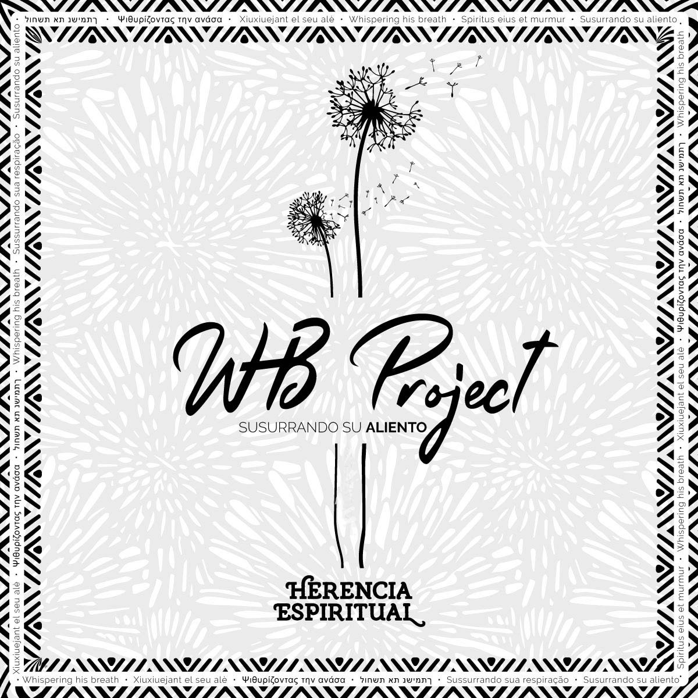

04 · VIDEO
01 · LA RAÍZ
Una voz que
viene de lejos.

“Whispering His Breath” significa susurrando su aliento: una imagen para la fe que se mueve, aunque no siempre se vea.
WHB Project nació en Bogotá–Cundinamarca en 2017. Desde entonces escribimos canciones que cruzan el pop, el folclor colombiano y una mirada cristocéntrica abierta a todo público.
Hoy la loma también se extiende hasta Tocancipá y Cali. Cambiamos de escenario, no de raíz: seguimos buscando una forma honesta de cantar lo que nos sostiene.
Conocer a quienes la sostienen ↗